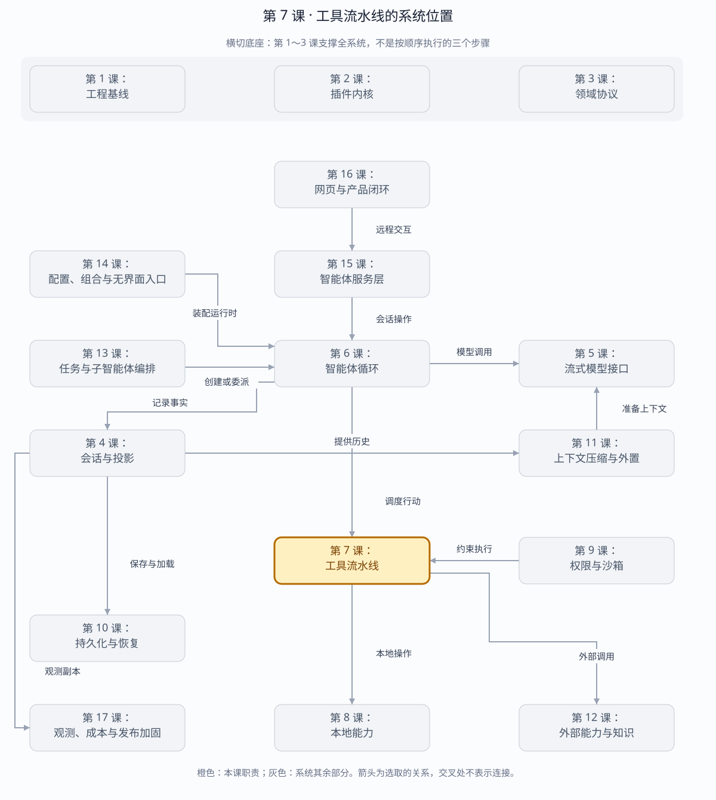

第 7 课：工具管线与多 Step Agent
模型只产生原始 tool-call；Registry 才拥有 schema 和函数。工具结果落账后，Agent 使用同一 Session 投影发起下一 step。
章节概览（可选）：三框架职责摘要
本章对比：DeepSeek Harness / DeepAgents / OpenHands
口径：DeepSeek 依据本地原仓库（99f6f02fecdb），不是 harness-lab；deepagent 按 LangChain DeepAgents 理解；OpenHands 对比当前 Software Agent SDK，不混用旧 V0。在线资料核对于 2026-08-28，描述文档能力，不代表已在本实验室安装或测试。没有依据的同名能力不强行等同。
三者的关键区别：DeepSeek 强调统一策略流水线；DeepAgents 强调中间件组合；OpenHands 强调 Action→Observation 合约。（基于上述依据的归纳）
本章在全系统中的位置
模型提出行动之后、真实能力执行之前的统一调用边界。
下面是本课程的概念地图，不是某框架的逐包调用图，也不表示实验室已默认装配全部能力。三套框架的实际对应关系见上方横向对比表。
全系统定位 · 橙色高亮第 7 课
打开大图 · Mermaid 图源
| 上游与输入 | 循环给出的工具名、参数、调用身份和取消信号。 |
|---|
| 下游与输出 | 经校验和策略处理的结果，回到会话与下一次模型请求。 |
|---|
| 不归本章负责 | 工具描述不是权限许可；本地文件和远程 MCP 都必须遵守各自执行边界。 |
|---|
| 放进具体场景 | 模型要求写文件，先验证参数、审批、执行，再规范化结果；不能把参数解析成功当作已执行。 |
|---|
接着看下方「可视化图解」：局部模块图解释职责，时序图解释一次调用，分支图解释异常与边界。
本课导览
| 包含内容 | 工具注册、参数校验、调用准备、并发调度、结果规范化和多步骤循环。 |
|---|
| 涉及模块 | ToolRegistry、JSON Schema 校验器、工具调度器、HarnessAgent。 |
|---|
| 白话解释 | 模型只填写“想调用什么和传什么参数”，真正能不能执行、怎么执行由工具管线把关。 |
|---|
| 解决的问题 | 阻止坏参数和未知工具进入业务函数，统一异常结果，并安全地支持并行工具与连续模型步骤。 |
|---|
点击下面的概念名称，可直达该概念的三框架实现、区别与依据。原有能力清单、示例和验收描述面向 harness-lab 教学实现；不要将其直接当作上游框架能力声明。
完整能力清单
| 能力 | 具体覆盖 | 失败语义 |
|---|
| 工具注册 | 保存模型可见模式与执行函数，列出稳定工具定义。 | 未知工具返回关联调用标识的工具结果。 |
| 参数准备 | 解析原始 JSON，并校验类型、必填字段、枚举、数组、对象和额外字段。 | 执行函数在校验通过前绝不运行。 |
| 结果规范化 | 成功值、业务失败和抛出异常统一转成结构化工具结果消息。 | 错误码、名称和消息可重放。 |
| 并行调度 | 相邻安全调用可重叠执行，独占工具在前后并行组之间形成屏障。 | 提交顺序始终遵循模型调用顺序。 |
| 权限接缝 | 执行前读取工具效果，交给权限服务决定是否允许或升级。 | 工具主体不自行绕过审批。 |
| 多步骤回路 | 结果落账后重新投影消息并调用下一模型步骤。 | 最大步骤数阻止无限工具循环。 |
| 取消收尾 | 取消信号传入工具并等待协作式结束。 | 写入取消结果后再闭合步骤与轮次。 |
主概念深挖：工具执行管线
工具管线位于模型工具调用的下游、真实业务函数和权限系统的上游，是不可信模型输出进入外部世界前的验证与调度边界。
模型 tool-call(name, raw JSON, callId)
│ 输入
▼
Registry.prepare ─► Schema 校验 ─► Permission
│ allow
▼
Scheduler ─► Tool body
│
▼
ToolOutcome / ToolResult（输出）
│
▼
Session ─► 下一 Step
| 背景与目的 | 模型产生的是概率性文本，不能直接当成可信函数参数；执行前必须确认名称、结构、权限和并发属性。 |
|---|
| 输入与输出 | 输入是工具名、调用标识和原始 JSON；输出是与调用标识关联的成功或失败工具结果消息。 |
|---|
| 适用场景 | 文件操作、终端命令、搜索、MCP 工具、多个独立查询并行执行。 |
|---|
| 底层组件 | 工具注册表、JSON Schema 子集校验器、PreparedCall、权限效果、批次调度器和结果规范化器。 |
|---|
| 核心逻辑 | 先解析校验全部调用，再按并行安全性分组；执行结果无论返回还是抛错都规范化，最后严格按模型顺序提交到 Session。 |
|---|
| 权衡 | 严格模式会拒绝部分可自动修正参数，但避免工具主体承担模糊输入和隐式安全决策。 |
|---|
| 方案对比 | 让每个工具自行校验自由度高却重复且不一致；统一管线集中策略，代价是要维护一套公共模式能力。 |
|---|
场景穷举
工具调用批次
├─ 全部安全并行 → 同时执行，按模型顺序提交
├─ safe, exclusive, safe → 两侧并行组被屏障隔开
├─ JSON/Schema 错 → body 不执行，返回校验结果
├─ 工具抛错 → 规范化 ToolError
├─ 权限拒绝 → 规范化权限结果
└─ cancel → 等待协作结束，写取消结果
| 场景 | 调度 | 结果语义 |
|---|
| 单个只读工具 | 直接执行。 | 成功值投影为工具消息。 |
| 多个独立查询 | 并行重叠执行。 | 提交顺序仍等于模型调用顺序。 |
| 写工具夹在中间 | 形成前后屏障。 | 避免读写次序被并发打乱。 |
| 坏参数 | 准备阶段停止。 | 错误携带参数路径，工具 body 零调用。 |
| 未知执行结果 | 进程崩溃后不在本层自动重试。 | 由恢复层记录 TOOL_OUTCOME_UNKNOWN。 |
多方案对比
| 方案 | 吞吐 | 顺序保证 | 复杂度 |
|---|
| 全部串行 | 低。 | 最强。 | 最低，适合工具很少。 |
| 全部 Promise.all | 高。 | 弱，副作用易乱序。 | 表面低、故障成本高。 |
| 安全并行+独占屏障 | 中高。 | 显式可控。 | 需工具声明并行安全性。 |
| 事务调度器 | 取决于冲突检测。 | 可提供更强原子性。 | 要求工具支持事务或补偿。 |
关键设计反问
- 并行安全性为什么由工具声明？
- 调度器看不到函数内部副作用，只能由工具作者提供最小事实；默认值应保守为不可并行。
- 为什么结果按模型顺序提交而不是完成顺序？
- 模型下一步按调用顺序关联 callId；完成顺序会让重放随机器时序漂移。
- 工具异常应该让 Agent 崩溃吗？
- 通常不应。工具失败是模型可以观察并修正的业务结果；只有框架不变量损坏才应升级为基础设施错误。
完整工具回路
step 1 / assistant message
│ tool-call(name, raw JSON, callId)
▼
ToolRegistry.prepare
├── 查找工具
├── JSON.parse（失败保留原文）
├── JSON Schema 校验
└── 决定 parallel / exclusive
│
▼
append tool/call ──> execute ──> normalize ──> append tool/result
│
▼
step 2 / model request
| 失败点 | 稳定 code | 是否进入下一 step |
|---|
| 名字未注册 | UNKNOWN_TOOL | 是，让模型看到错误并修正 |
| 坏 JSON/schema 不匹配 | INVALID_ARGUMENTS | 是 |
| execute 抛异常 | TOOL_EXECUTION_FAILED | 是 |
| 协作式取消 | TOOL_ABORTED | 否，闭合当前 turn |
| 无限工具循环 | MAX_STEPS | 否 |
工具注册：三框架分别怎么做？
同一个问题：工具名称、schema 与实现由谁绑定？
这个概念的区别：注册表的动态作用域、构造时工具列表和规格解析是不同目录维护方式。
参数准备：三框架分别怎么做？
同一个问题：坏 JSON 或不合法参数在哪里停下？
这个概念的区别：语法解析、类型验证和权限检查是不同失败点，应留下可区分的结果。
结果规范化：三框架分别怎么做？
同一个问题：业务返回值如何变成模型可见内容？
这个概念的区别：业务结果、模型内容、持久事件需要分层，不能让 UI 展示格式反向定义执行结果。
权限接缝：三框架分别怎么做？
同一个问题：谁能阻止工具真正执行？
这个概念的区别：权限不是工具描述的一部分，也不能靠“模型知道规则”代替执行前门禁。
多步骤回路：三框架分别怎么做？
同一个问题：工具结果如何影响下一次模型选择？
这个概念的区别：三者都回馈结果，但必须维持各自调用关联与消息协议，不能只追加一段 stdout。
并发调度
parallel A ─┐
parallel B ─┴─ 同时执行 ── 按 A、B 顺序提交结果
exclusive C ─ 单独执行，形成屏障
parallel D ─ 下一并发组
执行顺序不等于提交顺序。安全工具的 body 可以重叠，但 Session seq、tool/result 和下一模型上下文必须保持模型原始 call 顺序。
并行调度：三框架分别怎么做？
同一个问题：多个工具何时可以同时执行？
这个概念的区别：设置并发上限与判断某个调用是否可并发是两项机制，不应直接比较线程数。
取消收尾：三框架分别怎么做？
同一个问题：一组工具取消时，哪些结果仍需保留？
这个概念的区别：结果配对修复与副作用停稳要分别验收，不能靠补一条错误消息证明取消安全。
运行与断点
cd harness-lab
bun run demo:tools
VS Code F5 → 06 · 工具管线
# 建议断点
# ToolRegistry.prepare()：观察 raw → parsed → validated
# executeToolCalls()：观察 parallel group 与 exclusive barrier
# ToolRegistry.execute() catch：观察错误归一化
# HarnessAgent.run() continue：观察 step 1 → step 2
本阶段验收
TypeScript strict check: passed
tests: 38
pass: 38
fail: 0
覆盖：坏 JSON、缺字段、额外字段、未知工具、工具异常、
并发重叠、exclusive 屏障、顺序提交、多 step、取消、MAX_STEPS。
源码
下一课实现本地能力层：受控文件系统、子进程、Shell 和 PTY。它们会作为普通 ToolDefinition 接入，不侵入 Agent Loop。
返回完整路线 →